Quiz Time
Three little questions before your surprise, bb! 💕
Two Years of Us ❤️
12 October 2024 – 12 October 2026
To my dearest bb,
Happy 2nd anniversary, my love! ❤️
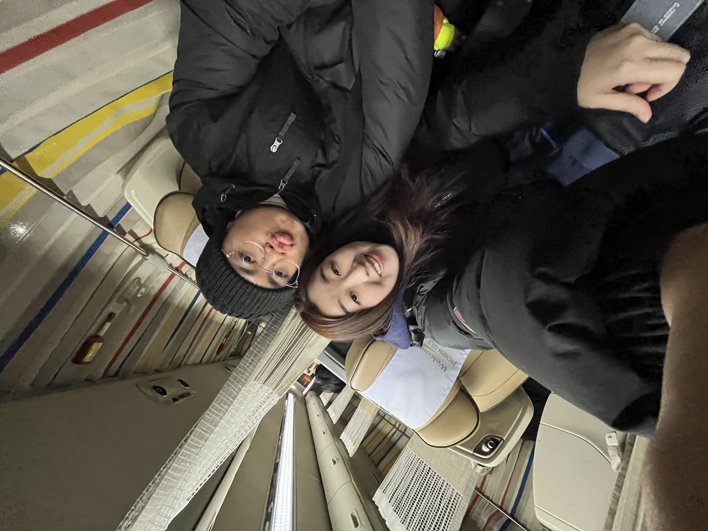
Two years ago, we started this beautiful journey together, and looking back, I can’t help but smile at how much happiness, laughter and love you have brought into my life. Sometimes, I still find it incredible that out of all the people in this world, our paths crossed, our hearts found each other, and somehow, I became the lucky man who gets to call you my bb.
Thank you for loving me the way you do. For caring about me, listening patiently to my endless troubles and complaints at work, showering me with affection, and of course, cooking all those delicious meals for me! I still remember that the otah, the salmon, the udon and meatballs were so very tasty. You have this wonderful way of making even the most ordinary days feel special. Life on Earth is already such an incredible experience, but getting to experience it while being in love with you makes it infinitely more beautiful.
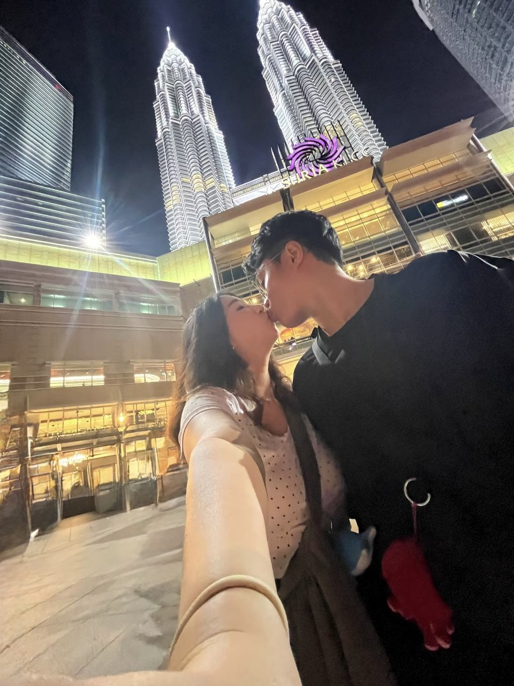
I think one of my favourite things about our second year together is how much more comfortable we’ve become with each other. We’ve slowly discovered more of each other’s personalities, little quirks and funny habits. We’ve reached that beautiful stage of love where I can fart freely and occasionally scratch my butt in front of you. HAHAHA. If that isn’t true love, I don’t know what is. 🤣 But jokes aside, there’s something incredibly precious about being able to be completely ourselves around each other, without pretence or fear of judgment. With you, I feel at home.
And what a wonderful year of memories we’ve made together!
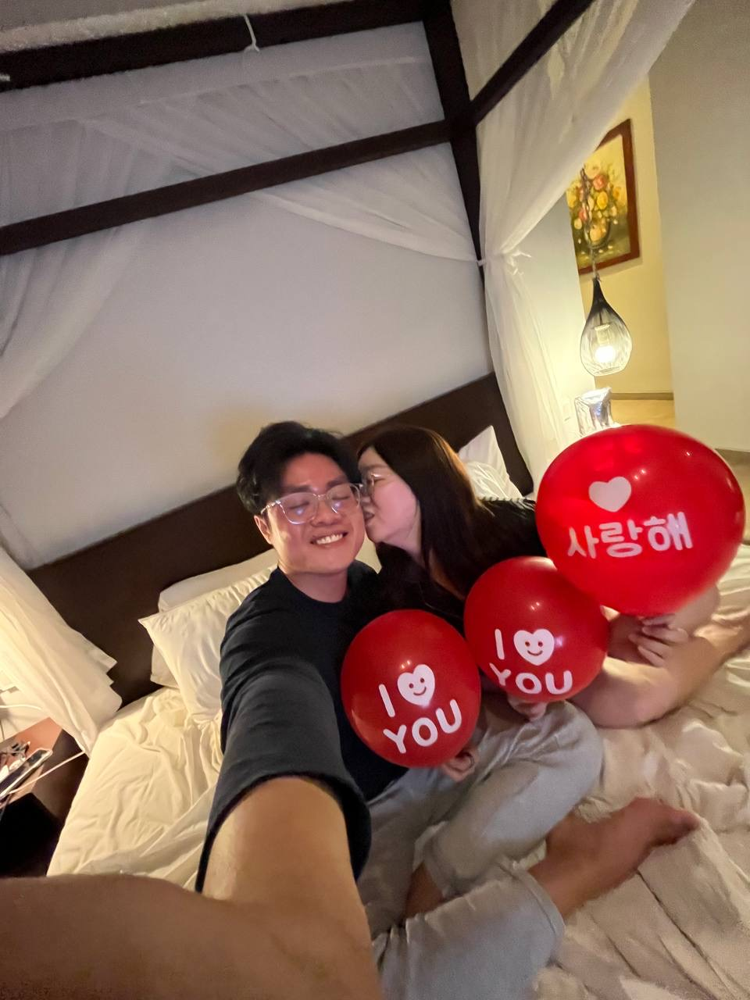
From celebrating our birthdays in Bintan and Batam, to riding a jet ski together and enjoying our romantic private dinners at restaurants that I so generously “booked out” just for us (okay lah, maybe we were just the only customers there 🤭). From singing our hearts out at concerts, to our spontaneous JB adventures filled with playing escape rooms, go-karting, getting haircuts, going for relaxing massages and unexpectedly eating amazing Korean BBQ at Sparkora. I love how we can turn even the simplest outing into something memorable, simply because we’re doing it together.
And of course, how could I ever forget our trip to Japan to see the sakura blossoms? Standing beneath those beautiful cherry blossoms with you felt almost surreal. Sakura flowers bloom for such a fleeting moment, yet the memories we made beneath them will stay with me for a lifetime. Of all the beautiful things we saw in Japan, my favourite was knowing that I got to share those moments with you.
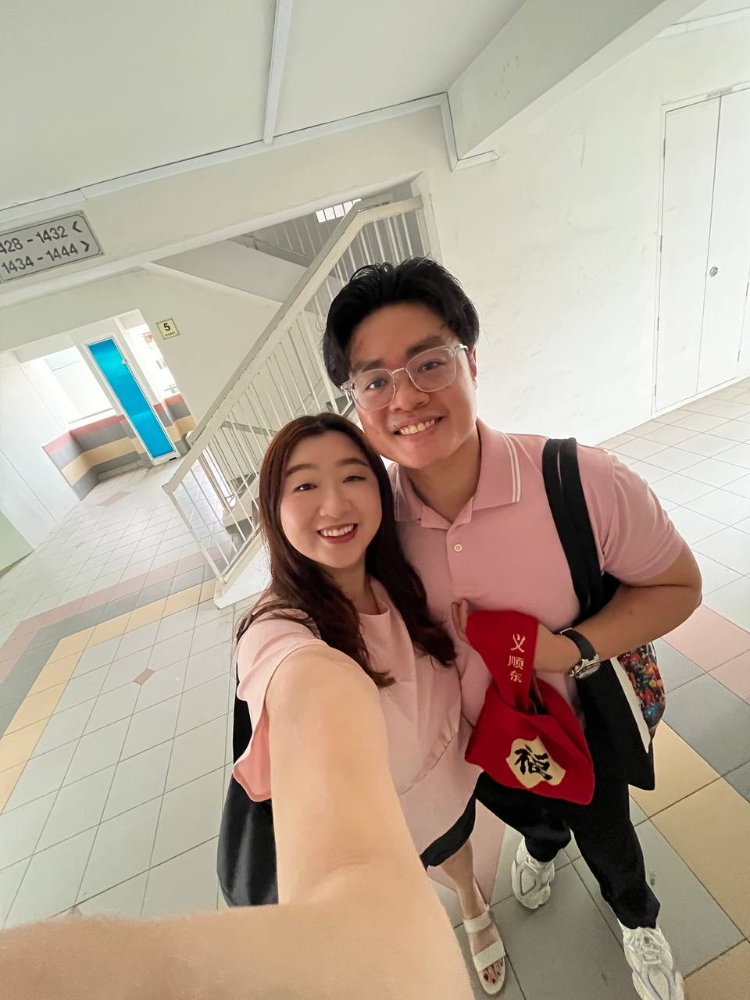
But beyond the holidays, adventures and happy memories, this year has also reminded me that love isn’t only about sharing the good times. It’s about choosing to stand beside each other when life becomes difficult.
Seeing you go through periods of sickness, work stress and, more recently, your painful back injury hasn’t been easy. I know how much you’ve been through, and I admire your resilience and strength more than you probably realise. Even when things are tough, you continue trying your best, and I’m so proud of you for that.
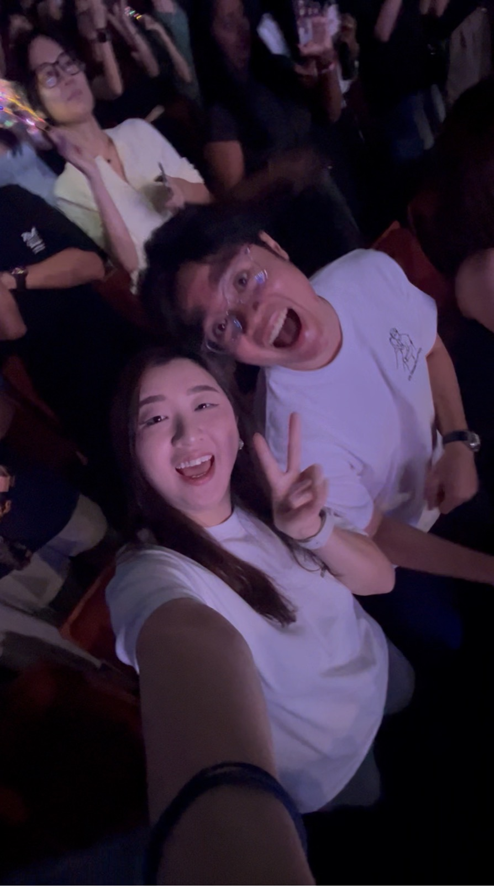
You know how greedy I am when it comes to spending time with you. If I could, I’d probably want to be beside you every single day! But especially during this difficult period, I want you to know that being there for you is never an obligation. It’s something I genuinely want to do. Whether it’s accompanying you to physiotherapy, helping you move around, looking after you when you’re unwell, or simply holding you close when you’re having a difficult day, I want to be there through it all.
You don’t always have to be strong, bb. On the days when you’re tired, frustrated or hurting, I hope you’ll remember that you have me to lean on. We can face those difficult moments together, one little step at a time. I will always shelter you bb, my umbrella is always open for my bb as we live life together.
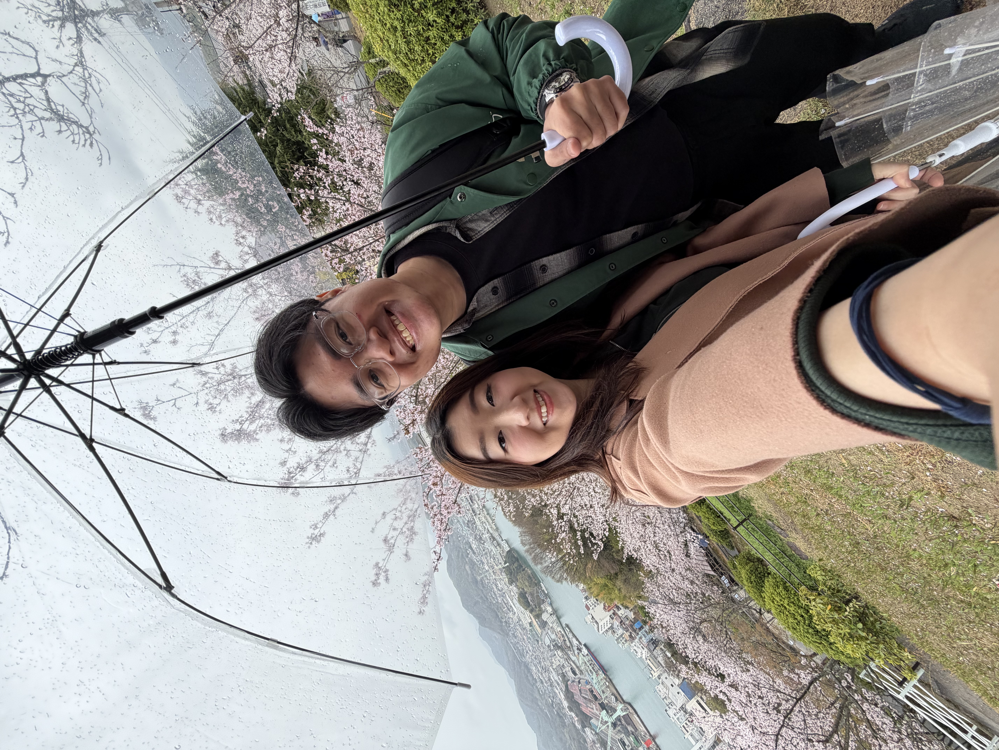
I also love how naturally we fit into each other’s lives. We share so many interests, enjoy playing and being silly together, and somehow always seem to be on the same wavelength (even in our 坏坏 moments 😈). I love our endless hugs, cuddles, sayangs, kisses and the simple comfort of holding your hand. I hope that no matter how many years pass, we’ll never stop being this affectionate, playful and hopelessly in love with each other.
Being with you has taught me that I am the luckiest man alive to have found you, and that being able to love you is one of the greatest joys of my life.
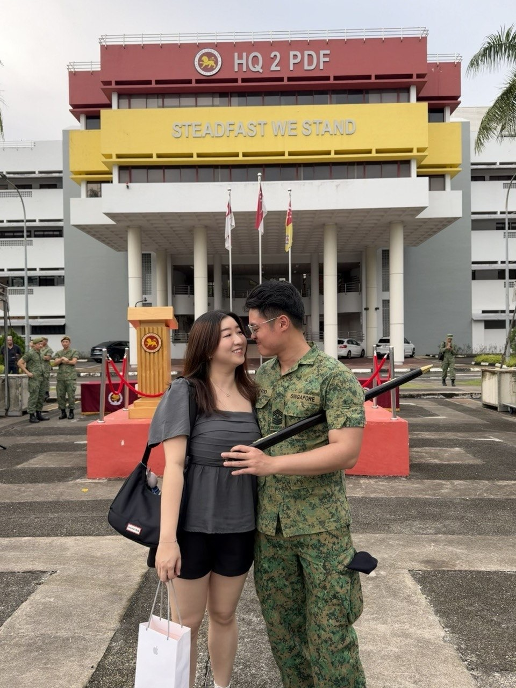
And bb, when I think about our future, my heart feels so full of excitement.
I dream of the day when we’ll finally have a little home to call our own. A place where we can wake up beside each other, cook together, laze around doing absolutely nothing, fill our days with laughter, and build a life that’s uniquely ours. I can’t wait for all the countries we’ll explore, the new experiences we’ll share, the silly adventures we’ll stumble into, and the countless memories we have yet to make.
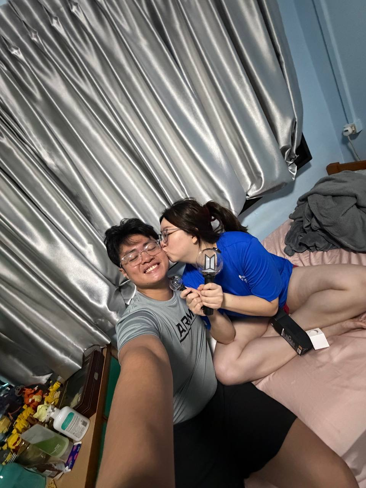
Most of all, I look forward to the day when I get to call you my wife, and we begin another beautiful chapter of our lives together.
I know life won’t always be sunshine, sakura blossoms and romantic dinners. There will be difficult days, unexpected challenges and moments when things don’t go according to plan. But if there’s one thing I’m certain of, it’s that I want to experience all of it with you.
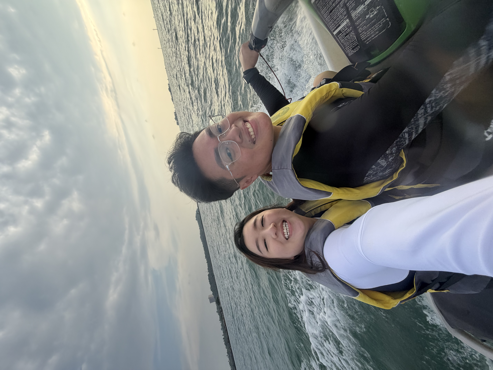
Through the salt water no matter how vast and wide, through thick and thin, through laughter and tears, in sickness and in health, I want to keep choosing you. Not just on our anniversaries, not just when everything is wonderful, but in all the ordinary, imperfect and beautiful moments in between.
Two years down, bb, and I still have so much love left to give you. I hope we never stop dating each other, teasing each other, discovering new things together and finding little reasons to fall in love all over again.
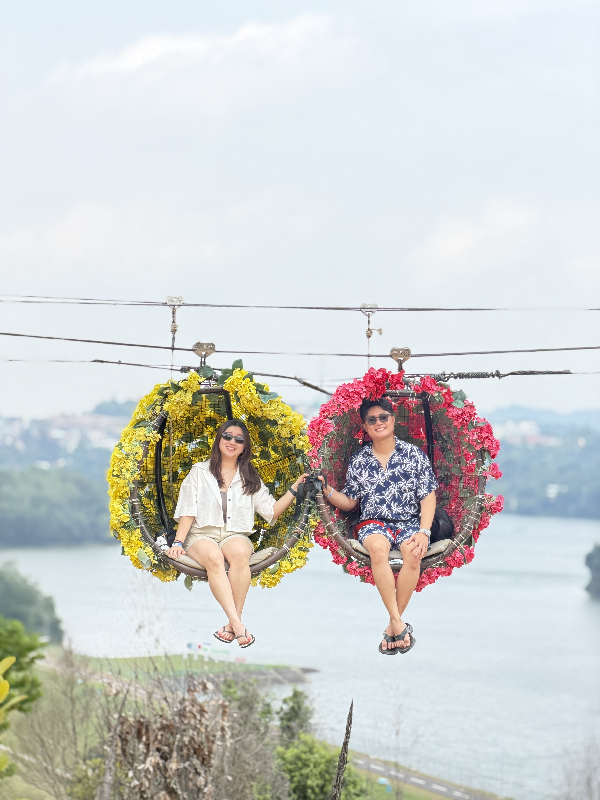
If these two years have been this beautiful, I can only imagine how wonderful the rest of our lives together will be.
Happy 2nd anniversary, my precious bb. Thank you for being my favourite person, my greatest comfort, my happiest adventure and the love I hope to grow old with.
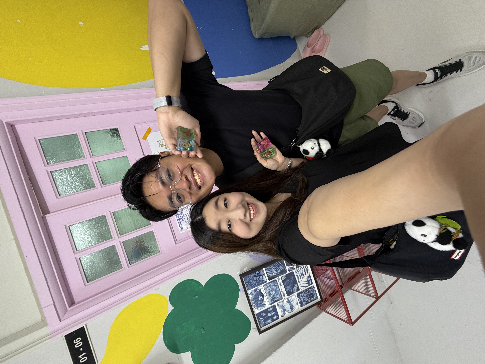
I love you so, so much. ❤️
My forever spark. ✨
Forever your silly, loving boyfriend.
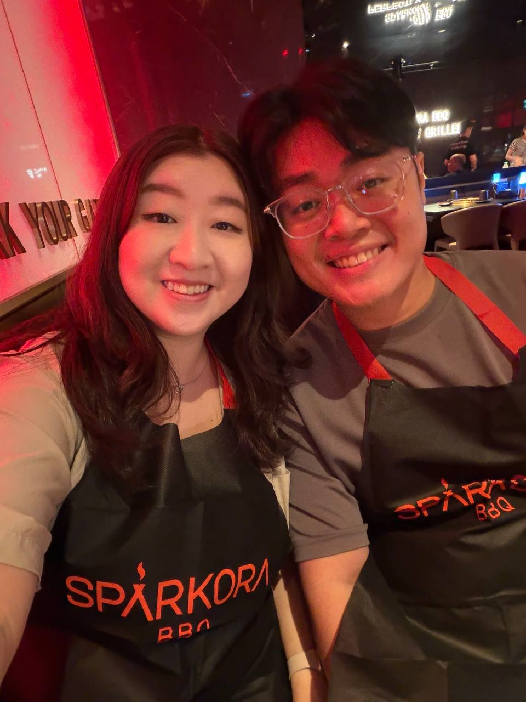